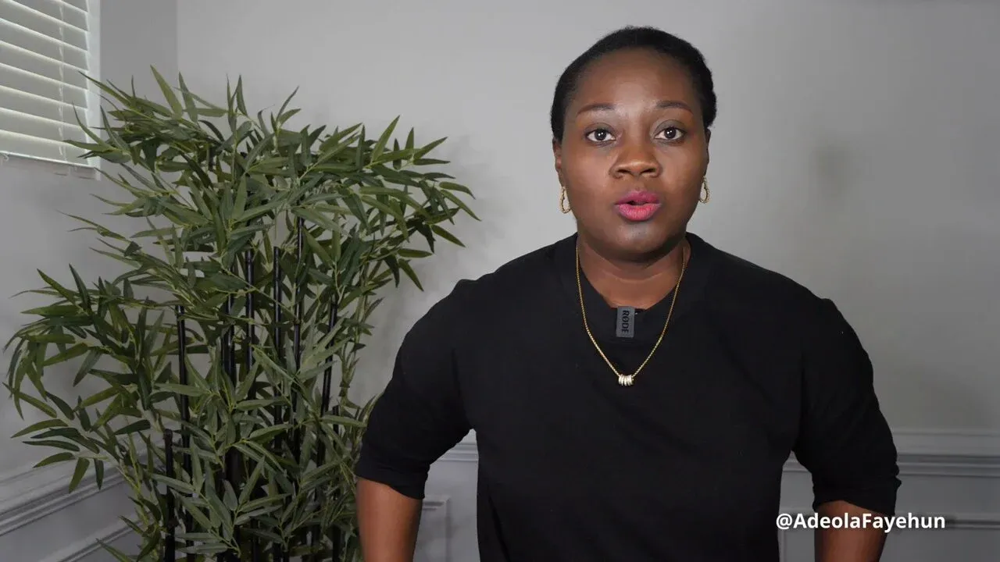
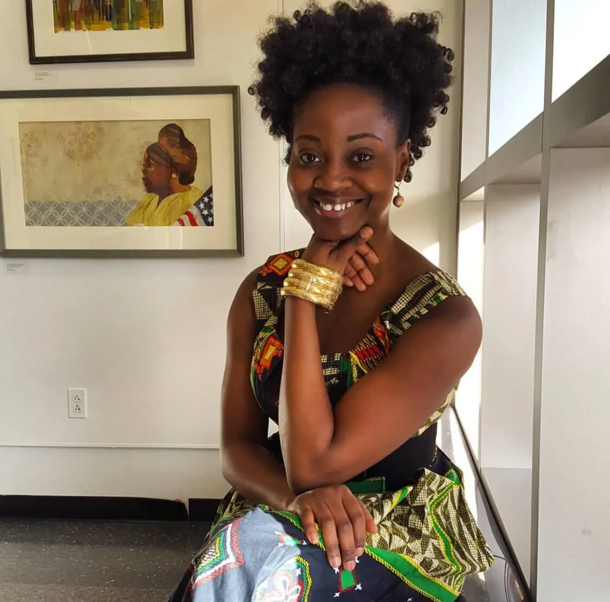

Adeola Fayehun: The Lioness in the Room, Adeola Fayehun and the Mic that Roared
Every so often, the winds of change do not howl from boardrooms or palace halls, they rise from a single voice. A voice, clear as a bell and sharp as a blade, unafraid to ask the questions everyone else was too timid to whisper. That voice belongs to Adeola Fayehun, the Nigerian journalist whose camera is her sword, whose laughter disarms tyrants, and whose courage speaks volumes louder than gunfire.
To call her just a journalist would be like calling the ocean a puddle, technically true, but wildly inadequate. Adeola is a truth-teller, a torchbearer, and an unshakable force in African political commentary, wielding satire like a scalpel and slicing through deception like hot knife through butter.
Let’s not beat around the bush: Adeola shook the continent.
The Interview That Roared
If history remembers her for only one moment, it will be that fateful day in 2015, in Washington D.C., when she marched up to then-Zimbabwean President Robert Mugabe and, with the eyes of the world watching, asked why he was still clinging to power at the age of 91.
Let’s paint the picture properly: world leaders, armed guards, stiff suits, and carefully prepared silence. Into this stiff, sterile atmosphere walks a petite woman with the fire of ten thousand suns. No fear, no hesitation, just that glint in her eye, the same glint a lioness has before the pounce.
She didn’t shout. She didn’t grovel. She asked, firmly and clearly, “Sir, don’t you think it’s time to step down?”
That wasn’t just a question. It was a thunderclap.
Mugabe didn’t answer, but that didn’t matter. She had already spoken truth to power, and the message rippled across Africa like wildfire through dry brush. In that moment, she gave voice to the voiceless, courage to the timid, and, perhaps most importantly, hope to a continent weary of silent suffering.

From Satire to Substance
Before that moment, Adeola had already begun her mission with her YouTube show, “Keeping It Real with Adeola.” But let’s be clear, this wasn’t your average talking-head commentary. No sir. This was news with a pulse, commentary with rhythm, and journalism that danced between comedy and critique like a ballerina with a sledgehammer.
While others hesitated to touch African leaders with criticism, she made it her daily bread. Corruption? She mocked it. Tyranny? She ridiculed it. Injustice? She tore it apart with words that cut deeper than steel.
In a media landscape often weighed down by fear and propaganda, Adeola’s voice was a breath of fresh air, a gust, really, blowing away cobwebs of apathy and whispering into the ears of millions: “Wake up.”
And people did. Young Africans began to engage with politics. Diaspora communities tuned in weekly. Her episodes didn’t just go viral; they stuck to people’s ribs like well-seasoned jollof rice.
Beyond the Headlines: The Real Impact
To measure Adeola’s influence, you can’t just count views or likes. No, her impact is measured in changed minds, bold conversations, and awakened spirits.
- In Nigeria, her coverage of government incompetence around national disasters forced uncomfortable conversations.
- Across Africa, citizens began questioning the longevity of their leaders in office, thanks to her fearless questioning.
- Diaspora communities, once distant observers, began to re-engage, reignite, and reinvest in Africa’s future.
More than once, she has been the spark behind online activism, #StopTheNonsense, #AfricanVoicesMatter, and countless movements that started with just one video, one voice, one Adeola.
She is not the change. She is the catalyst.
The Art of the Unafraid
Raymond Reddington once said, “Value loyalty above all else.” Adeola lives this. But her loyalty isn’t to any government or institution, it’s to truth, to her people, to the idea that Africa deserves better.
In a world where many trade honesty for popularity, where journalists become mouthpieces instead of megaphones, Adeola chose the narrow path. The thorny one. And she didn’t just walk it, she danced on it.
She made speaking out feel like art. She painted injustice in bold colors, wrapped truth in humor, and served revolution with a side of laughter. Her approach made truth easier to swallow, even when it burned going down.
Giving Her Her Flowers
So today, we don’t just applaud Adeola, we raise a toast. To her audacity. To her clarity. To her fire.
She reminded us all that journalism isn’t just about reporting, it’s about revolting. Not with violence, but with questions. Not with weapons, but with wit.
She made sure the voiceless weren’t just heard, they were amplified.
She proved that one woman, one mic, and one mission can shake even the oldest thrones.
And she did it all with a smile.
A Final Word
Dear reader, if you find yourself wondering what one person can do in the face of giants, remember Adeola. Remember the day the lioness asked the lion why he was still on the throne. Remember that the mic, when wielded with courage, is mightier than the sword.
She didn’t wait for change. She became it.
And so can you.
Written in honor of Adeola Fayehun, the voice, the vision, the vanguard.
Spotlite Africa | Celebrating Africa’s Changemakers